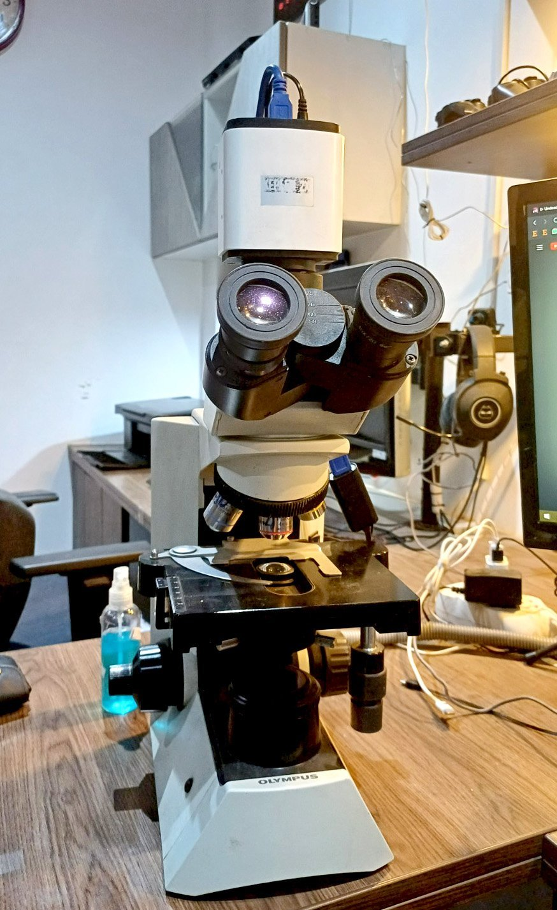

Ecosistema Diagnóstico

Inmunohistoquímica
Paneles predictivos (HER2, PD-L1) y algoritmos para neoplasias indiferenciadas.
Biopsias Rápidas
Resultados en tiempos críticos para decisiones intraoperatorias.


Dirección Médica Especializada
Liderazgo anatomo-patológico para interconsultas directas con cirujanos y oncólogos.
Contactar al Director